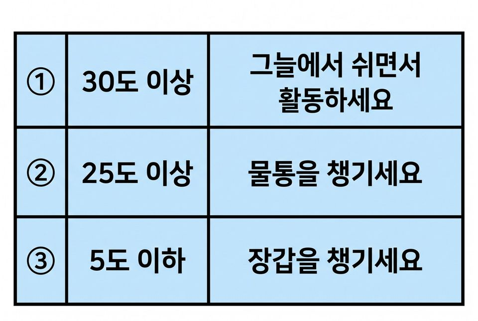
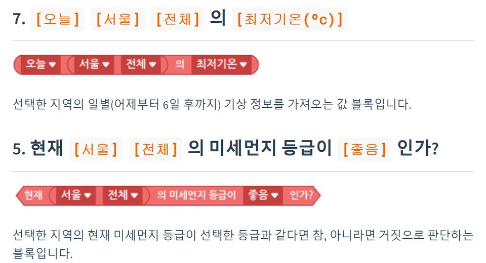
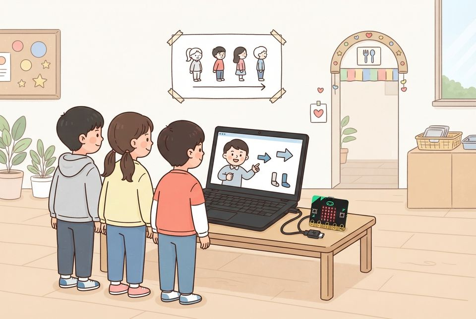
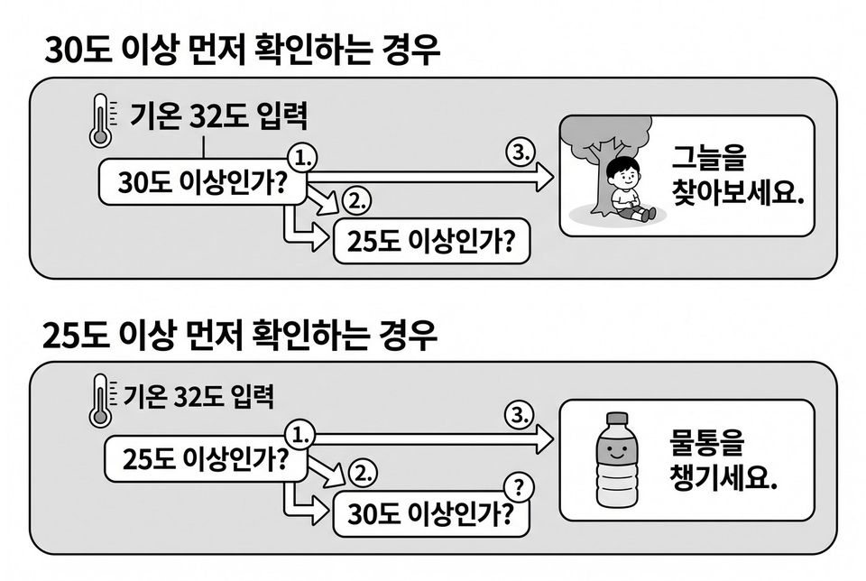

체육 선생님의 야외 수업 판단 지식을 규칙표로 옮겨 엔트리 판단 도우미 만들기
학습 문제 — 체육 선생님의 판단 지식을 규칙표로 옮겨 야외 수업 판단 도우미를 만들어 봅시다.
개요
| 성취기준 | [6실인공지능03-01] 사람의 판단 지식을 규칙으로 옮기는 놀이와 프로그램 만들기로 규칙 기반 인공지능의 판단 과정을 체험한다. 연계 성취기준: [6실05-05] |
|---|---|
| 핵심 역량 | 지식정보처리 역량, 창의적 사고 역량 |
| 핵심 기능 | ① 문제를 해결하는 기초적인 프로그래밍하기 ② 사람의 판단 지식을 조건과 결론의 규칙표로 옮기기 ③ 규칙표를 엔트리 조건 블록으로 옮겨 판단 도우미 만들기 ④ 시험 값의 실행 결과를 규칙표와 견주어 고치기 ⑤ 판별 기준으로 규칙 AI와 예시 AI 사례 가르기 |
| 가치 태도 | 생활 속에서 컴퓨터를 활용해 해결 가능한 문제를 탐색해 보려는 자세 규칙을 누가 정했는지 따져 보고 근거를 들어 판단하려는 자세 |
교수학습 활동
15차시 도입 동기 유발 · 학습문제 제시15차시 전개 활동1. 판단 지식을 규칙표로 옮기기 · 활동2. 엔트리로 판단 도우미 만들기16차시 전개 활동3. 날씨 카드로 시험하고 규칙 순서 바꿔 보기 · 활동4. 판별 기준으로 규칙 AI·예시 AI 가르기16차시 정리 배운 내용 정리와 의뢰 해결 보고 · 다음 의뢰 예고
15차시도입8분
동기 유발
- 체육 선생님 의뢰서 속 말 듣기: “야외 수업은 제가 날씨를 보고 정해요”
- 선생님이 무엇을 보고 판단하는지 세 가지 찾기
- 사람이 판단하던 일을 컴퓨터가 대신하려면 무엇이 필요할지 말하기

학습문제 제시
- 체육 선생님의 판단 지식을 규칙표로 옮겨 야외 수업 판단 도우미를 만들어 봅시다.
준비물날씨 카드 5장(기온·미세먼지·비)
자료체육 선생님 의뢰서(인터뷰 글), 규칙 활동지, [도입] 상황 그림
유의점규칙 기반 6차시 중 이 시간은 사람의 판단 지식을 규칙으로 옮겨 도우미를 만든다.
유의점의뢰서는 수업 전에 체육 선생님께 판단 기준을 여쭈어 만들고, 어려우면 예시 의뢰서를 쓴다.
유의점활동지 배부와 자리 정돈 시간을 도입 시간에 포함한다.
15차시전개32분
활동1. 판단 지식을 규칙표로 옮기기 (12분)
- 의뢰서에서 선생님이 따지는 조건에 밑줄 긋기
- 예: “비가 오면 강당”, “미세먼지 나쁨이면 실내”
- 예: “33도 이상 실내, 28도 이상 그늘에서 짧게”
- 어디에도 해당하지 않으면 ‘운동장 수업’으로 정하기
- 먼저 따질 조건 순서를 정해 규칙표(갈림길 그림) 그리기
- 날씨 카드 다섯 장을 규칙표로 먼저 판정해 적기

활동2. 엔트리로 판단 도우미 만들기 (20분)
- 뼈대 작품에서 ‘기온’·‘미세먼지’·‘비’ 변수 살피기
- 확장 블록 불러오기에서 날씨 블록 추가하기
- 오늘 우리 시·도의 날씨(비)·미세먼지 등급·최고기온 블록 찾기
- 규칙표 순서대로 비 → 미세먼지 → 기온 조건 블록 쌓기
- 결론을 말하기·읽어주기 블록으로 알리기
- 시험 단추: t 키로 세 값을 묻고 대답으로 판정하기
- 도전: 비디오 감지로 센 사람이 4명 이상이면 ‘한 줄로 서 주세요’ 알리기


준비물학생 기기(인터넷 연결), 모둠 웹캠(도전)
자료규칙 활동지, [활동1] 기온 규칙표 안내표, 뼈대 작품
유의점날씨 블록은 값만 알려 줄 뿐, 판단 규칙은 체육 선생님의 지식을 옮긴 것임을 짚는다.
유의점수업 전에 블록·메뉴 이름과 우리 시·도 날씨 값이 나오는지 확인한다.
유의점날씨 값이 안 나오면 날씨 카드 값을 시험 단추로 넣게 한다.
유의점도전 화면은 저장하지 않으며, 비치기를 원하지 않는 학생은 사람 사진 카드로 대신한다.
유의점느린 학습자는 블록 순서 도움 카드로 빈칸만 채우고, 빠른 학습자는 도전을 한다.
16차시전개34분
활동3. 날씨 카드로 시험하고 규칙 순서 바꿔 보기 (18분)
- 날씨 카드 다섯 장 값을 시험 단추로 넣어 결과 적기
- 규칙표 판정과 다르면 블록과 견주어 원인 적고 고치기
- 경계값(28도·33도, 미세먼지 ‘보통’·‘나쁨’) 넣어 보기
- 짝과 자리를 바꾸어 기온 규칙을 맨 앞으로 옮기기
- 비 오는 30도 카드를 다시 넣고 결과가 달라진 까닭 쓰기
- 확인 순서를 원래대로 되돌리고 저장하기
- 도전: 기상자료개방포털 지난주 기록으로 하루 판정하기

활동4. 판별 기준으로 규칙 AI·예시 AI 가르기 (16분)
- 판별 기준으로 오늘 만든 도우미가 인공지능인지 가리기
- 기온만 보여 주는 온도계 프로그램과 다른 점 말하기
- 다른 점: 사람이 판단하던 일을 사람의 지식을 규칙으로 옮겨 대신함
- 사례 카드 여섯 장을 판별 기준으로 먼저 가리기
- ‘사람이 규칙을 모두 적어 줌’과 ‘예시에서 찾음’ 판에 놓고 근거 쓰기
- 규칙표에 없는 날씨(황사·강풍)를 찾아 규칙 기반의 한계 쓰기
준비물학생 기기, 날씨 카드, 사례 카드 6장과 가르기 판(모둠별)
자료규칙·시험 활동지, [활동3] 순서 바꾸기 비교표, 미리 받아 둔 우리 지역 기온 자료표(도전)
유의점바꾸는 것은 확인 순서 하나뿐이며 기준값과 결론은 그대로 둔다.
유의점도전에서 옮긴 값에는 관측 지점·단위와 조회 날짜를 함께 적게 한다.
유의점조건·날씨·읽어주기 블록이 있다는 것만으로 인공지능이라 하지 않고, 사람의 판단 지식을 옮겨 대신하는지 판별 기준으로 가린다.
유의점AI 판별 기준: 사람이 판단하던 일(가르기·알아보기·안내하기 등)을 사람의 지식을 규칙으로 옮기거나 데이터로 배워 대신하면 인공지능, 정해진 동작만 되풀이하면 인공지능이 아니다.
유의점규칙은 사람의 지식에만 기대므로 규칙표에 없는 상황은 판단하지 못함을 짚는다.
16차시정리6분
배운 내용 정리와 의뢰 해결 보고 (4분)
- 옆 짝 도우미에 비 오는 30도 카드를 넣어 결과 확인하기
- 체육 선생님께 보고하기: 옮긴 판단 지식과 규칙표에 없는 상황 한 줄 쓰기
다음 의뢰 예고 (2분)
- 도우미가 알아듣게 세상을 숫자로 바꾸는 ‘데이터 번역가’ 의뢰 알기
- 온도계 눈금과 숫자 표시를 견주어 볼 것 알고 활동지 제출하기
자료시험 활동지
유의점수업을 마치면 비디오 감지를 끄고 웹캠 표시등이 꺼졌는지 확인한다.
유의점쓰기를 어려워하는 학생은 구술로 확인하고 지원한 사실을 적는다.
유의점결석이나 미제출로 확인하지 못한 학생은 보충 확인 시점을 정한다.
평가 계획
컴퓨팅 사고력 · 규칙 기반 판단의 표현과 확인
체육 선생님의 판단 지식을 확인 순서가 드러나는 규칙표와 엔트리 판단 도우미로 옮기고, 시험 결과를 근거로 고치며, 도우미가 인공지능인 까닭을 판별 기준으로 설명할 수 있는가?
| 수준 | 평가 기준 |
|---|---|
| 매우 잘함 | 의뢰서에서 조건 세 가지와 결론을 찾아 확인 순서가 드러나는 규칙표로 옮기고, 같은 순서로 판단하는 도우미를 만든다. 날씨 카드 다섯 장과 경계값의 예상 결과와 실행 결과를 모두 기록해 다른 곳을 고치고, 순서를 바꾸었을 때 비 오는 30도의 결과가 달라진 까닭을 두 규칙에 모두 해당하기 때문이라고 설명한다. 도우미가 사람이 판단하던 일을 사람의 지식을 규칙으로 옮겨 대신한다는 점을 판별 기준으로 설명하고, 규칙표에 없는 상황을 들어 한계를 쓴다. |
| 잘함 | 규칙표를 확인 순서가 드러나게 옮긴 도우미를 만들고, 다섯 카드를 실행해 예상과 다른 곳을 찾아 고친다. 순서를 바꾼 뒤 달라진 결과를 기록하고, 사례 카드 대부분을 판별 기준에 맞게 가른다. |
| 보통 | 규칙 일부를 블록으로 옮겼으나 확인 순서나 어디에도 해당하지 않을 때의 처리가 빠져 있다. 또는 카드 일부만 실행해 기록했거나, 도우미를 인공지능으로 본 까닭을 ‘조건 블록이 있어서’로 설명한다. |
| 노력요함 | 교사가 의뢰서의 조건과 블록 순서를 한 줄씩 짚어 주고 도움 카드와 종이 규칙표로 함께 해 본 뒤에도, 규칙을 순서대로 확인하는 형태로 옮기거나 실행 결과를 규칙표와 견주는 데 어려움이 있다. |
| 미관찰 | 결석이나 미제출, 기기 장애로 확인하지 못한 경우. 낮은 성취로 적지 않고 따로 기록한 뒤 보충 확인 시점을 정한다. |
평가 방법 활동지 분석 · 작품 실행 확인 · 관찰
연동 도구·링크
과정안에 나오는 도구가 저절로 걸립니다. 수업 전에 학교망에서 열리는지, 블록·메뉴 이름이 바뀌지 않았는지 확인하세요.
엔트리 ↗블록 코딩, 인공지능 블록, 데이터 분석(테이블·차트)계정: 학생 계정 없이 만들기 화면 사용 가능(저장은 교사 계정)엔트리 사용 설명서 ↗엔트리 안내엔트리 비디오 감지(손·얼굴·사물) ↗웹캠으로 손·사물 알아보기(얼굴 대신 손·물건)계정: 엔트리와 같음엔트리 번역·읽어주기 ↗번역, 글을 소리로 읽기계정: 엔트리와 같음읽어주기 블록 ↗엔트리 번역·읽어주기 안내엔트리 날씨 블록 ↗오늘 기온·미세먼지 불러오기계정: 엔트리와 같음기상자료개방포털 ↗지난 날짜별 기온 기록 찾기계정: 조회는 필요 없음
내 수업 링크
학급 패들렛, 엔트리 작품, 활동지 주소처럼 이 차시에 쓸 링크를 걸어 둡니다. 이 브라우저에만 저장되고 밖으로 보내지 않습니다. 학생 이름이 든 주소는 넣지 마세요.